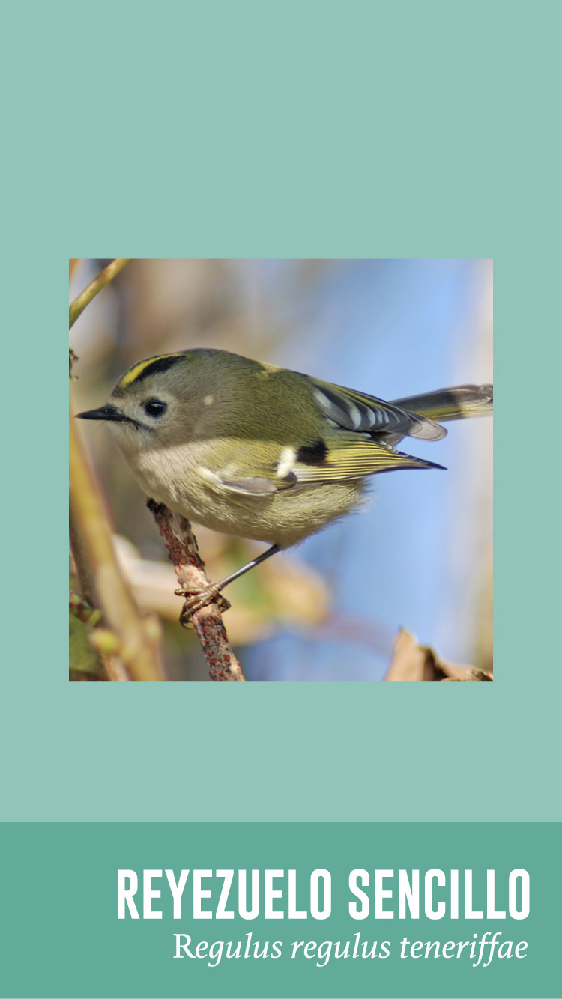

<ion-view hide-nav-bar="true"> <!-- Ocultar la barra de navegacion ()header, includio el menu lateral -->
  <ion-content scroll="false">

	<div class="botonAtrasAves">
		
    </div>

    <div class="botonAudio">
		
    </div>

	<div class="divImgAveFull">
		
	</div>

  </ion-content>
</ion-view>
